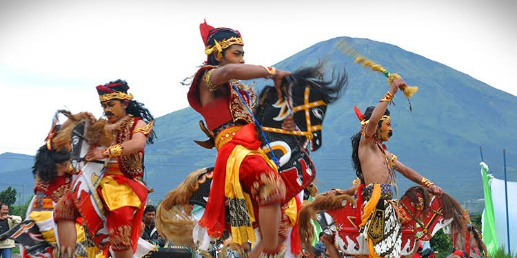

Sejarah
Sejarah dan asal usul Banyumas telah tercantum dalam sebuah tulisan sejarah berbahasa Jawa yang menyebutkan bahwa wilayah yang satu ini berawal dari kisah pohon tembaga yang berada di Desa Pekunden, Kecamatan Banyumas.Asal mula berdirinya Kadipaten Banyumas telah diceritakan oleh Gitosewojo atau yang dikenal dengan Eyang Gito. Beliau merupakan tokoh masyarakat asli daerah tersebut.
Kata Banyumas berasal dari 2 kata: banyu dan mas. Banyu berarti "air", mas berarti "emas". Pada awalnya nama tersebut diberikan oleh seorang pemuda dari Roma yang mengembara hingga ke wilayah ini. Saat tiba di wilayah tersebut, dirinya menyaksikan para penduduk sedang mengantri di sebuah sumber mata air karena musim kemarau. Para penduduk mengatakan "rega banyu kaya mas" (harga air seperti emas), sehingga muncullah nama Banyumas.
Geografis
Banyumas merupakan sebuah wilayah kabupaten yang terletak di Provinsi Jawa Tengah, Indonesia. Ibu kotanya adalah Kota Purwokerto, kabupaten ini berbatasan dengan Kabupaten Brebes di utara, Kabupaten Purbalingga, Kabupaten Banjarnegara, dan Kabupaten Kebumen di timur, serta Kabupaten Cilacap di sebelah selatan dan barat.
Luas wilayah Kabupaten Banyumas sekitar 1.327,60 km2 atau setara dengan 132.759,56 ha, dengan keadaan wilayah antara daratan dan pegunungan dengan struktur pegunungan terdiri dari sebagian lembah Sungai Serayu untuk tanah pertanian, sebagian dataran tinggi untuk pemukiman dan pekarangan, dan sebagian pegunungan untuk perkebunan dan hutan tropis terletak di lereng Gunung Slamet sebelah selatan.
Wisata
Banyumas sendiri memiliki beberapa tempat wisata andalan yang wajib dikunjungi oleh para wisatawan. Salah satunya yaitu wisata alam, contohnya sebagai berikut:
Kebun Raya Baturraden
Lokasinya ada di Jalan Pancurantujuh-Wanawisata Baturraden, Purwokerto, Dusun III Berubahan, Kemutug Lor, Baturraden, Banyumas, Jawa Tengah. Kabun Raya Baturraden mengoleksi aneka tumbuhan, mulai dari mulai bunga anggrek hingga tanaman obat, paku, dan bambu.
Telaga Sunyi
Telaga Sunyi merupakan tempat wisata alam yang beralamat di Limpakuwus, Kecamatan Sumbang, Banyumas, Jawa Tengah. Tempat ini menawarkan pemandangan telaga dengan sebuah air terjun kecil. Selain bersantai, para pengunjung juga bisa main air dan berenang di tempat ini atau sekadar menikmati air terjun.
Kuliner
Kuliner khas dari Banyumas di antaranya adalah:
Mendoan
Purwokerto dan Banyumas terkenal akan mendoannya. Mendoan merupakan olahan tempe yang digoreng setengah matang bersama adonan tepung. Mendoan berasal dari bahasa Jawa "mendo" yang berarti setengah matang. Tempe digoreng setengah matang sehingga teksturnya masih terasa lembut.
Jenis tempenya pun khusus. Tempe yang digunakan tidak padat seperti tempe biasa. Tempe dibuat lembaran tipis dan lebar serta dibungkus dengan daun pisang. Adonan tepungnya pun bukan menggunakan tepung terigu, melainkan tepung beras.
Gethuk Goreng

Gethuk Goreng merupakan makanan manis khas Sokaraja, Banyumas. Getuk yang paling banyak ditemukan di pinggir kota Purwokerto ini terbuat dari singkong dan gula kelapa. Gethuk Goreng Sokaraja sudah melegenda dan menjadi bagian tak terpisahkan dari Purwokerto dan Banyumas.
Bahkan camilan satu ini diusulkan sebagai warisan budaya nasional bukan benda (intangible) oleh Direktorat Internalisasi Nilai dan Diplomasi Budaya Kementerian Pendidikan dan Kebudayaan (Kemendikbud) RI.
Kesenian
Di antara seni pertunjukan yang terdapat di Banyumas antara lain:
Ebeg

Ebeg adalah bentuk kesenian tari daerah Banyumasan yang menggunakan boneka kuda yang terbuat dari anyaman bambu dan kepalanya diberi ijuk sebagai rambut. Tarian Ebeg di daerah Banyumas menggambarkan prajurit perang yang sedang menunggang kuda. Gerak tari yang menggambarkan kegagahan diperagakan oleh pemain Ebeg.
Lengger
Kesenian Lénggér Banyumasan merupakan kesenian yang lahir, tumbuh, dan berkembang di wilayah sebaran budaya Banyumas yang merupakan daerah agraris dengan mayoritas masyarakatnya bermata pencaharian sebagai petani dan bercocok tanam. Hal tersebut yang menginspirasi lahirnya kesenian Lénggér Banyumasan pada tahun 1755. Kesenian Lénggér Banyumasan itu sendiri sampai saat ini belum di ketahui pasti siapa penciptanya karena kesenian ini merupakan kesenian yang berasal dari rakyat, diciptakan oleh rakyat, dan di tujukan untuk rakyat. Wujud dari kesenian Lénggér Banyumasan ini yaitu seni tari tradisional yang dalam pertunjukannya sang Lénggér tidak hanya menari tetapi juga membawakan lagu tradisional Banyumasan dengan iringan musik gamelan atau lebih spesifik lagi seperangkat alat musik calung.